Pembuka
Assalamu’alaikum Wr. Wb.
Dengan memohon rahmat dan ridha Allah SWT, kami mengundang Bapak/Ibu/Saudara/i untuk hadir dan memberikan doa restu pada pernikahan kami yang akan diselenggarakan di tengah taman tropis Flora Raya — tempat bunga-bunga raksasa bermekaran menyambut hari bahagia.
SPESIMEN No. 01 · Plumeria rubra — Kamboja, penjaga gerbang rumah kaca“Dan di antara tanda-tanda kebesaran-Nya ialah Dia menciptakan pasangan-pasangan untukmu agar kamu cenderung dan merasa tenteram kepadanya, dan Dia menjadikan di antaramu rasa kasih dan sayang.”
— QS. Ar-Rum: 21
Mempelai
Dua Hati, Satu Taman
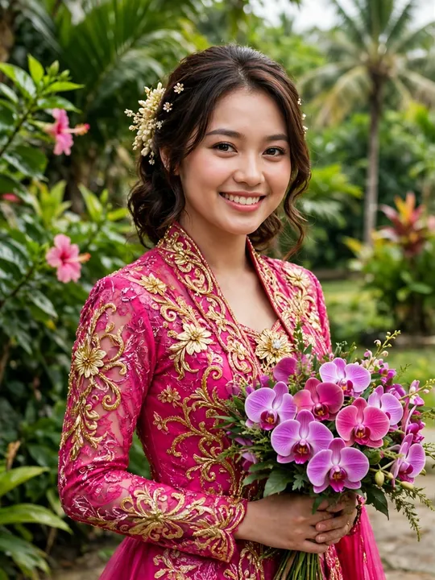
Meyzsa Putri Ananda, S.Pd.
Putri dari Bapak H. Muhammad Ridwan
& Ibu Hj. Siti Aminah
Ahmad Fahrezzi Pratama, S.T.
Putra dari Bapak H. Bambang Sutrisno
& Ibu Hj. Ratna Dewi
Love Story
Kisah yang Tumbuh
Benih — 2021
Pertemuan pertama di sebuah pameran tanaman hias. Meyzsa memilih anggrek, Fahrezzi merekomendasikan monstera — percakapan tentang daun berubah menjadi percakapan tentang hidup.
Tunas — 2023
Setelah dua tahun saling menyiram kabar, keduanya merawat taman kecil bersama di akhir pekan: kamboja, pakis, dan keberanian untuk berkata jujur tentang rasa.
Mekar — 2025
Di bawah lengkung bougenville yang sedang berbunga lebat, Fahrezzi berlutut dengan cincin di dalam kotak kayu dan satu pertanyaan sederhana. Meyzsa menjawab di antara kupu-kupu.
Berbuah — 2027
Kini taman itu bersiap untuk panen terbesarnya: sebuah pernikahan. Kami mengundang Anda menjadi saksi musim paling indah dalam hidup kami.
Hitung Mundur
Menuju Hari Mekar
MEDALI KACA EMBUN · Victoria amazonica — teratai raksasa penanda waktuIjab Kabul
SABTU, 12 JUNI 2027 · 08.00–10.00 WIB
Masjid Agung Al-Azhar
Jakarta Selatan
Resepsi Flora Raya
SABTU, 12 JUNI 2027 · 11.00–13.00 WIB
The Ritz-Carlton Jakarta, Pacific Place
Jakarta Selatan

Galeri
Taman Kenangan
Geser ke kanan–kiri untuk berjalan menyusuri taman kami. Ketuk foto untuk memperbesar.
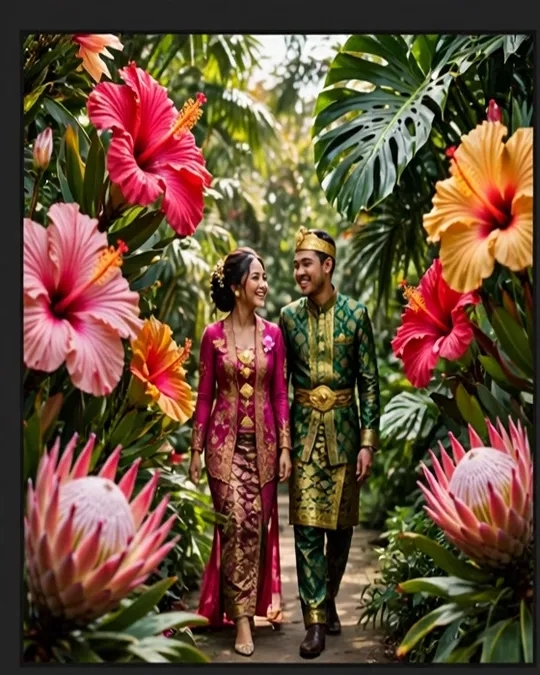
Hibiscus rosa-sinensis
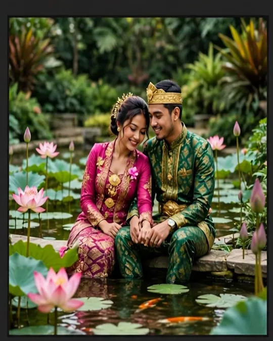
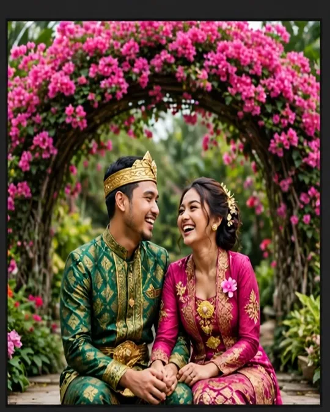
Bougainvillea spectabilis
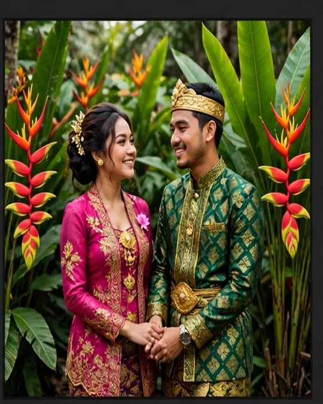
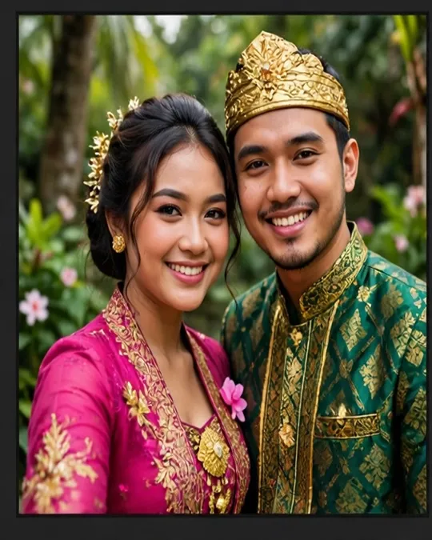
Monstera deliciosa
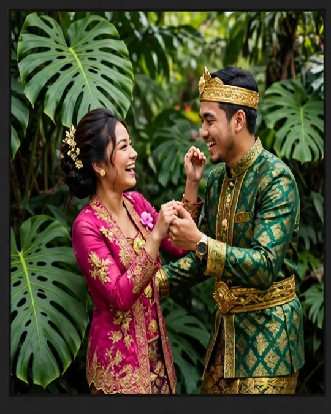
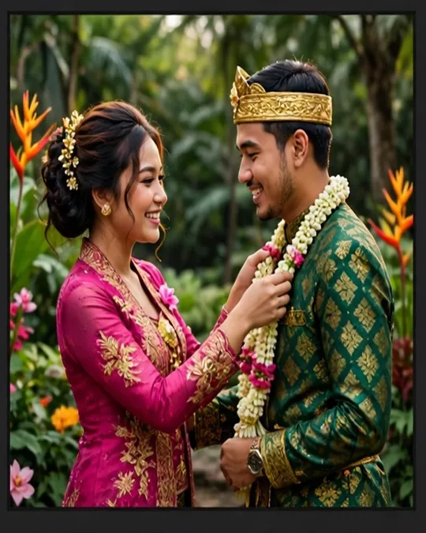
Plumeria obtusa
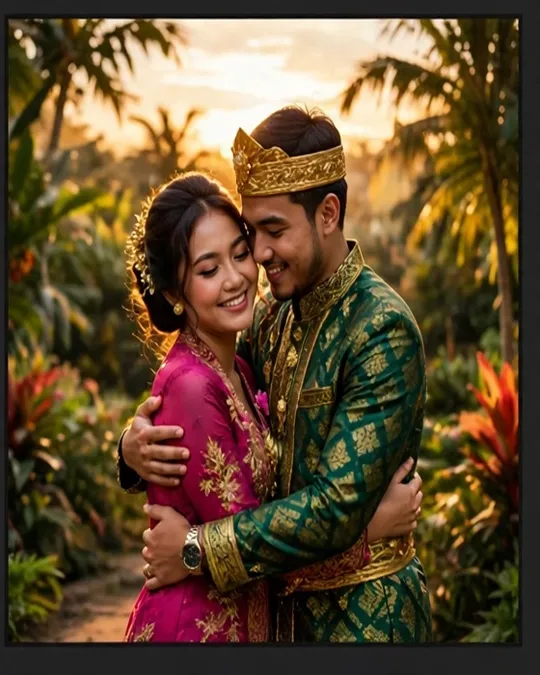
Foto 1 dari 8
Cuplikan Video
Teaser Flora Raya
Slideshow foto tema dengan musik “Petals on the Stone Floor”.
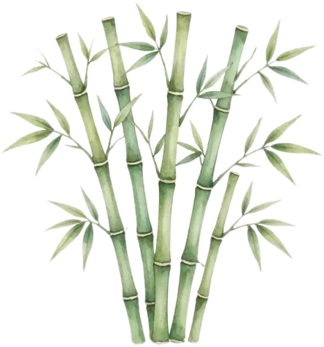
Dresscode
Palet Taman
PALET KELOPAK · contoh kain sewarna kelopak spesimenKami mengundang Anda tampil sewarna taman: fuchsia, oranye senja, hijau zamrud, atau krem gading. Hindari putih polos, ya.
Denah & Info Lokasi
Menuju Taman
Akad — Masjid Agung Al-Azhar, Jakarta Selatan. Masuk melalui gerbang utama Jl. Sisingamangaraja; area parkir tersedia di sisi timur masjid. Tamu diharapkan hadir 30 menit sebelum akad.
Resepsi — The Ritz-Carlton Jakarta, Pacific Place. Akses melalui lobi Pacific Place, SCBD. Valet parking tersedia; stasiun MRT terdekat: Istora Mandiri (±7 menit berjalan kaki).
Live Streaming
Saksikan dari Jauh
Bagi keluarga dan sahabat yang berhalangan hadir, akad nikah akan disiarkan langsung. Tautan di bawah adalah contoh demo tema.
Demo — Tautan ContohSabtu, 12 Juni 2027 · mulai 07.45 WIB

Hashtag & Galeri Tamu
#MeyzsaFahrezzi
Abadikan momen Anda dengan tagar #MeyzsaFahrezzi, dan unggah foto terbaik Anda ke galeri tamu di perangkat ini.
Jadilah yang pertama membagikan momen — ketuk tombol unggah.
Demo client-side: foto tersimpan hanya di perangkat ini (localStorage).
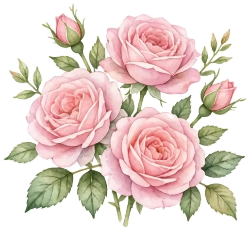
RSVP & Dinding Ucapan
Konfirmasi & Doa
Demo client-side: RSVP & ucapan tersimpan hanya di perangkat ini (localStorage), tidak terkirim ke server.
Buku Tamu & Check-in
QR Check-in
Tunjukkan kode QR ini di meja penerima tamu untuk check-in cepat, atau isi buku tamu digital di bawah.
Demo client-side: daftar check-in tersimpan hanya di perangkat ini (localStorage).
Amplop Digital
Tanda Kasih
Doa restu Anda adalah hadiah terindah. Bagi yang berkenan memberikan tanda kasih, tersedia amplop digital demo berikut:
a.n. Meyzsa Putri Ananda
a.n. Meyzsa Putri Ananda
Kirim kado fisik ke:
Meyzsa Putri Ananda
Jl. Kenanga Raya No. 12, Kebayoran Baru, Jakarta Selatan 12120
Nomor rekening & e-wallet di atas adalah contoh demo tema, bukan nomor aktif.
Turut Mengundang
Keluarga Besar
Keluarga Besar H. Muhammad Ridwan
Keluarga Besar H. Bambang Sutrisno
Kel. Besar Alm. H. Abdul Ananda
Kel. Besar Alm. H. Soedarmadji
Seluruh kerabat & sahabat kedua mempelai
Penutup
Terima Kasih
Merupakan kehormatan dan kebahagiaan bagi kami beserta keluarga apabila Bapak/Ibu/Saudara/i berkenan hadir dan memberikan doa restu. Atas kehadiran serta doa yang tulus, kami mengucapkan terima kasih.
Wassalamu’alaikum Wr. Wb.
Meyzsa & Fahrezzi
#MeyzsaFahrezzi · Flora Raya · 12 Juni 2027